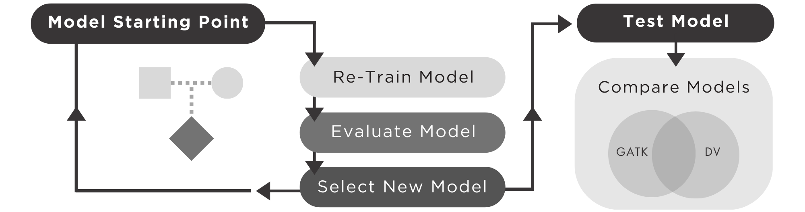

DV-TrioTrain v0.8
Background
The exisiting DeepVariant models were only trained on human data. Species-specific DeepVariant models exist for mosquito genomes, and the endangered Kākāpō parot. We built TrioTrain (DV-TT) to enable us to build custom DeepVariant models for cattle, bison, and yak genomes. Our custom models incorporate allele frequency data from over 5,500 published Bovine samples, making DV-TT the first tool to expand the existing Allele Frequency model into non-human, mammalian genomes. Our work illustrates the limitations of applying models built exclusively with human-genome datasets in other species. Our findings suggest that comparative genomics approaches in deep learning model development offer performance benefits over species-specific models.
How TrioTrain works
DV-TT is a SLURM-based, automated pipeline that produces new DV model(s) for germline variant-calling in any diploid organism, focusing on species without NIST-GIAB reference materials.

Assuming the necessary training data for your favorite species already exist, TrioTrain automatically enables customizing the DeepVariant model. Additional details about the required data can be found here.
Initialization
Currently, TrioTrain supports initializing training with weights from an exisiting DeepVariant Model, using one of the following options:
- Human WGS DeepVariant-v1.4 formats
- Default model - includes the insert size channel
- Allele Frequency model - adds one additional channel from a Population VCF
- Any custom model satisfying the channel expectations below
An index of compatible models can be found here.
Training
For each trio provided, TrioTrain will perform two (2) iterations of re-training, one for each parent. The starting parent is a user-specified parameter, either Mother or Father. With the first iteration an existing DeepVariant model is used to initalize the weights and build upon prior learning. Subsequent iterations begin with a prior iteration's selected checkpoint.
Evaluation
As a training iteration proceeds, learning is evaluated using labeled examples from the parents' offspring. The same individual's genome is used for both iterations run for a trio. Our assumption is that a model trained on a parent genome will be better at genotyping variants inherited from that parent in the offspring's genome.
Selection
Model weights that produce the maximum F1-score in the offspring's genomeare selected for further testing, and to become the starting point for the next iteration.
Testing
Testing occurs for all model iterations with a set of genomes previously unseen by the model. Variants are called with the model iterations by providing a custom checkpoint to the single-step variant caller.
Comparision
Variants produced during a training iteration by a candidate model are compared against a user-defined benchmark set with hap.py, a standardized benchmarking tool recommended by the Global Alliance for Genomic Health (GA4GH). See GA4GH's resources on Germline Small Variant Benchmarking Tools and Standards, or the original Illumina hap.py github page to learn more.
Author
Jenna Kalleberg (jakth2@mail.missouri.org)
Acknowledgements
Many thanks to the developers and contributors of the many open source packages used by TrioTrain.